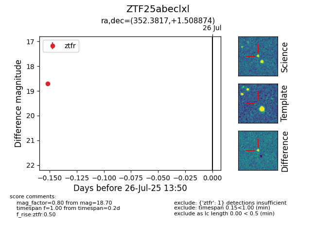

Target ZTF25abeclxl at 2025-07-26 13:50, see:
FINK: fink-portal.org/ZTF25abeclxl
Lasair: lasair-ztf.lsst.ac.uk/objects/ZTF25abeclxl
ALeRCE: alerce.online/object/ZTF25abeclxl
alt names
ZTF25abeclxl (ztf,fink)
coordinates:
equatorial (ra, dec) = (352.3817,+1.50887)
galactic (l, b) = (85.1070,-55.23038)
photometry
last ztfr=18.70
1 ztfr detections
